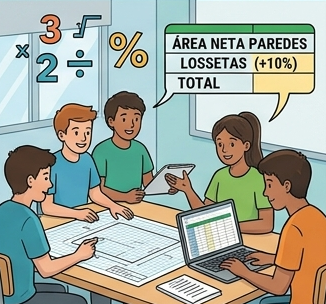

Texto

¿Qué vamos a hacer?
Ahora que tenemos las medidas digitales, vamos a calcular cuánta pintura y cuántas baldosas necesitamos de verdad. No basta con el área del suelo; hay que prever que las piezas se rompen o hay que cortarlas (lo que llamamos "merma").
Organización
Tiempo: 15 minutos.
Trabajo: Grupos cooperativos (4-5 personas).
Lugar: Aula de clase / Taller.
Paso a paso
Cálculo de la Superficie de Paredes:
Suma la longitud de todas tus paredes (el Perímetro que te dio Floorplanner).
Multiplica ese total por la altura del aula (medida con el flexómetro).
Importante: Resta el área de la puerta/s y las ventanas. ¡No queremos pintar el cristal!
Cálculo del Suelo (Las Losetas):
Toma el área del suelo que te dio el programa.
Calcula el 10% de merma: Multiplica el área por 0.10.
Suma ese resultado al área total. Esa es la cantidad de material que pediremos al almacén para no quedarnos cortos.
¿Qué vamos a aprender?
A diferenciar entre superficie bruta y superficie neta (descontando huecos).
A entender el concepto de merma en la construcción.
Vuestro rol como Capataces de Obra
Calculista: Realiza las operaciones en la calculadora.
Secretario/a: Anota los cálculos y los resultados finales en la ficha de grupo.